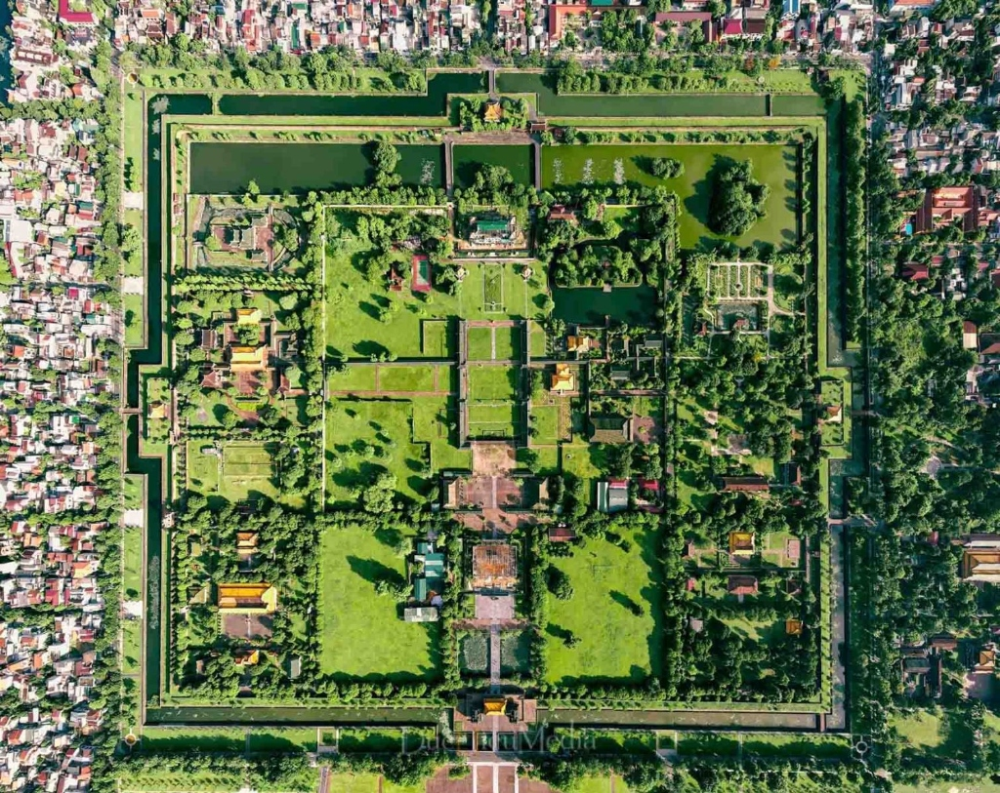
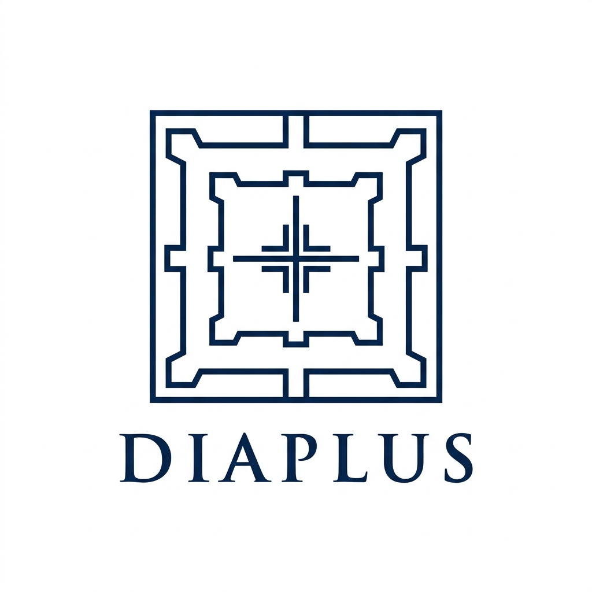

Phân Tích Giải Mã Hình Học: Từ Không Ảnh Cố Đô Sang Biểu Tượng Logo
Sự kỳ diệu trong quy hoạch phong thủy của Cố Đô Huế và mối liên hệ với thương hiệu DIAPLUS:

- Hình học đồng tâm hoàn hảo: Hệ thống thành hào kép hình vuông bao bọc vững chắc.
- Pháo đài lồi Vauban: Các góc tường thành nhô ra tạo nhịp điệu kiến trúc kỷ hà chuẩn mực.
- Trục Thần Đạo & Trục Hoành: Giao lộ huyết mạch xuyên suốt từ Ngọ Môn qua Điện Thái Hòa, tạo thành một dấu (+) tự nhiên linh thiêng giữa lòng Hoàng thành!

- Chắt lọc tinh hoa: Lược bỏ các chi tiết tán cây và nhà dân lộn xộn, chỉ giữ lại khung xương kỷ hà thanh lịch nhất.
- Dấu (+) & Thương hiệu DIAPLUS: Dấu cộng y tế/sức khỏe nằm uy nghiêm tại tâm điểm, tôn vinh giá trị trường tồn.
- Typography DIAPLUS: Được đặt ở vị trí chân đế vững chãi với tỷ lệ khoảng cách chữ (tracking) chuẩn Haute Couture.
Bộ 4 Thiết Kế Vector SVG Chuẩn Sản Xuất (Infinite Resolution)
Được lập trình bằng tọa độ hình học chính xác, sắc nét ở mọi kích cỡ hiển thị và sẵn sàng gia công:
Concept 01: The Imperial Citadel Crest
Tái hiện đầy đủ 3 vòng thành (Kinh Thành, Hoàng Thành, Tử Cấm Thành) với pháo đài lồi Vauban, hào nước bao quanh, cửa Ngọ Môn ở phía Nam và dấu (+) y tế vàng rực rỡ tại Điện Thái Hòa. Chữ DIAPLUS font Cinzel hoàng gia.
Tải File Vector SVG
Concept 02: Golden Ratio Citadel
Khung thành trì vát góc 45° thanh thoát. Bốn cổng hoàng thành được mở bằng các rãnh âm bản tinh xảo, làm nổi bật dấu (+) y tế khối đặc uy quyền tại tâm điểm. Chữ DIAPLUS font Space Grotesk tân tiến.
Tải File Vector SVG
Concept 03: The Citadel Monogram Fusion
Dành cho bạn nếu muốn kết hợp cả 2 ý tưởng: Các tường thành và tháp canh được cách điệu uốn lượn khéo léo thành chữ D lớn, chữ P ở góc trên, và dấu (+) làm trái tim kết nối. Chữ DIAPLUS font Syne thời thượng.
Tải File Vector SVG
Concept 04: The Matrix Citadel
28 khoang sân cung đình được quy hoạch chuẩn xác tương ứng với 28 ngăn thuốc thông minh của thiết bị CalenDIA Plus, đối xứng quanh dấu (+) y tế trung tâm. Chữ DIAPLUS font Plus Jakarta Sans hiện đại.
Tải File Vector SVG